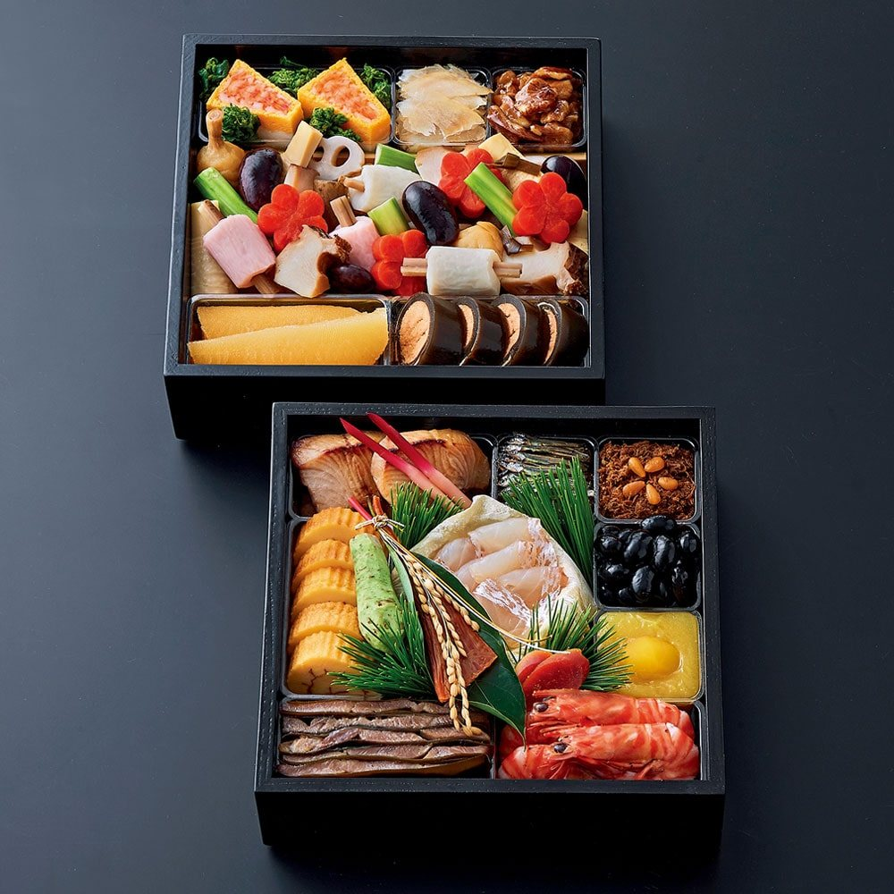

Hatsuzuki, Shogetsuan New Year osechi
On 31 December at eleven in the morning, the noren goes up.
A word from the kitchen
We pack these boxes in our own kitchen, to be opened on the first morning of the year.
Fish from the Seto Inland Sea and ingredients from Hiroshima, each prepared with the same thinking as our omakase.
On the afternoon of New Year's Eve, the noren will be up and we will be waiting for you.
The chef
The box
- Price
- ¥98,000 (tax included)
- Quantity
- 15 sets only
- Contents
- Two tiers, serves two to three, 21 dishes
- Order period
- Sunday 1 November – Sunday 20 December
Orders close early once all sets are taken. - Collection
- Thursday 31 December, 11:00 am – 3:00 pm
In person at the restaurant (we do not deliver) - Payment
- At the restaurant when you collect. Cash, VISA, JCB, AMEX, Diners
- Eat by
- Friday 1 January
- Storage
- Keep refrigerated at 10°C or below. Please put it in the fridge as soon as you get home.
- Serving
- Take it out of the fridge about 30 minutes before eating, so the flavours open up. No reheating is needed.
Allergens
The eight major allergens and twenty further allergens listed under Japanese labelling rules, with the dishes that contain them. All dishes are prepared in the same kitchen, so trace amounts cannot be ruled out.
This table is provisional. We will check and update it once the menu is final.
| Allergen | Dishes that contain it |
|---|---|
| Shrimp / prawn | Glazed kuruma prawns |
| Crab | Not used |
| Walnut | Not used |
| Wheat | Dishes seasoned with soy sauce (herring roe, sardines, grilled and simmered dishes) |
| Buckwheat | Not used |
| Egg | Rolled sweet omelette |
| Milk | Not used |
| Peanut | Not used |
| Allergen | Dishes that contain it |
|---|---|
| Almond | Not used |
| Abalone | Not used |
| Squid | Not used |
| Salmon roe | Not used |
| Orange | Not used |
| Cashew nut | Not used |
| Kiwi fruit | Not used |
| Beef | Roast Hiba beef |
| Sesame | Pounded burdock with sesame |
| Salmon | Not used |
| Mackerel | Not used |
| Soybean | Black beans, koya tofu, dishes seasoned with soy sauce |
| Chicken | Not used |
| Banana | Not used |
| Pork | Not used |
| Macadamia nut | Not used |
| Peach | Not used |
| Yam | Not used |
| Apple | Not used |
| Gelatine | Not used |
Please note
CancellationCancellation is free until Sunday 20 December. After that date, the full price is charged.
If you are running lateIf you may be late, please call us. If we have not heard from you by 3:00 pm, the full price is charged, as we cannot keep a chilled box at the restaurant beyond that time.
ReturnsEach box is finished on the morning of collection and must be kept chilled. As we cannot know how it is stored once it leaves us, we cannot accept returns or exchanges.
How to order
Collection in person at the restaurant in Hiroshima, Japan only. We cannot ship within Japan or abroad. Orders are taken in Japanese.
Orders are taken by telephone only.
Order by telephone 082-259-3098 From outside Japan: +81 82-259-3098- Phone hours
- 3:00 pm – 5:30 pm (except Sundays and national holidays)
- Order period
- Sunday 1 November – Sunday 20 December
Orders close early once all sets are taken.
When you call, we will ask for:
- Your name and phone number
- How many boxes, and for how many people
- When you will collect (any time between 11:00 am and 3:00 pm)
- Any allergies or foods you do not eat